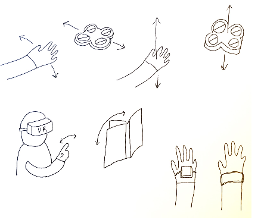
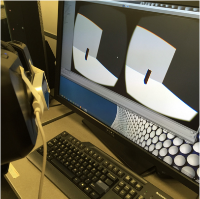
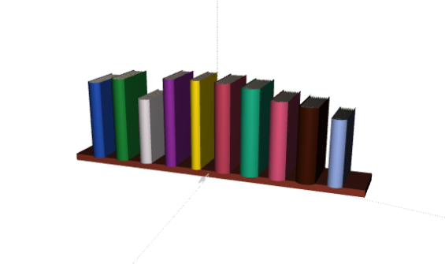

In the past, people did most of their research in physical libraries flipping through printed newspapers, magazines, books, documents, etc. However, with the spread of PDF (Portable Document Format) files, e-books, and online databases, many people are doing their research and consuming most of their information through digital books. The conventional ways of reading PDF files and e-books are scrolling through the documents on the computer or tapping/swiping on a tablet. Although tablets have a more intuitive way of interacting with digital books, they still have a lot of limitations.
What are other ways of interacting with digital books?
How can gestures help with manipulating digital books?
SIFT is a web application for the Leap Motion that provides a new way of interacting with digital books. In SIFT, the user can use gestures that are commonly used for print books to consume digital books in a 3D library scene. With the leap motion controller, users can select, organize, open, close, and flip through pages of 3D books.
Wendy is a junior student at Wellesley College majoring in Political Science. She is researching primary sources for her final paper. Wendy is frustrated with scrolling through many pages and documents on her laptop. She would like to view her digital documents the same as she views books at the Clapp Library on campus.
SIFT is a web application that can help Wendy organize and flip through many pages of digital documents and books in the same way as a physical book.
In SIFT, there are 3D bookshelves where books will be shelved. Each book can be browsed by using the hand to hover over the book. Once the book is selected, the book title and information is displayed. When a hand does a pinch gesture, the book opens, and the user can swipe through the pages. The user can also clear the books on the shelf by swiping with one hand. After swiping the books off the shelf, the user can move the books and organize them the way he/she would like to. The Leap Motion is used for gesture input.
The overall goal of our project was to explore the idea of using gestures to manipulate digital and physical objects. Over the course of the semester, we have changed our project proposal and the ways of implementation.
In the initial project proposal, we wanted to explore the idea of controlling a drone/quadcopter with gestures. FlightMotion allows users to use hand gestures while wearing an armband to control the quadcopter. They can perform standard quadcopter tasks: steering, hovering, altitude control, speed control, and stopping. We wanted FlightMotion to allow users to easily learn how to fly a drone/quadcopter through intuitive gestures.
However, after doing extensive research about the possibility of hacking a commercial drone, we discovered the difficulty of accomplishing it. Unless we buy a drone that allows wifi capabilities or other high-tech features, we would have to figure out how to hack a finished commercial product. This factor discouraged the team from pursuing this project idea because we did not want to focus too heavily on just hardware.
Because of the challenges of implementing FlightMotion, we began to think of an alternative topic/project to explore. The original proposal would require us to spend many many hours on the hardware aspect of the project.
Since we originally started this project by exploring the idea of moving digital or physical objects by gestures, we thought of using the Oculus Rift and Leap Motion to create a virtual reality where the user can move and manipulate digital objects. We initially thought of having the user be able to control a quadcopter in this VR. However, we felt like controlling a quadcopter in a virtual reality lacked in the side of practical application compared to other possible project ideas.
After a lengthy discussion, we collectively decided to create a virtual reality of a library where the user can use gesture control to interact with digital files (i.e. PDFs and ebooks). The user can use gestures that we commonly use for physical books to browse, search, and read digital files. One good thing about this proposal is that the HCI lab already have demos that couples the Oculus Rift and Leap Motion together. The challenge is to expand greatly upon the demos and create a virtual reality with the library metaphor.
With this change in the direction of the project, SIFT was born. The name SIFT does not have any real meaning. It was just a name that seemed cool and fitting.
For the first milestone of the project, we learned how to develop in Unity and tried to implement one of the riskiest part of the project. We based our project on the demo of several floating blocks . We replaced the blocks with a free book model from the asset store to the scene. Development within Unity mainly involved us dragging different components to the scene and very little of actual coding. For the first milestone of the project, we were able to have the user be able to use his/her hand to touch the book model and make it float.
However, as we learned more about the environment of developing in Unity, we discovered the difficulty of customizing gestures for the leap motion controller. Because of the steep learning curve that would be involved with learning how to customize gestures, we started to come up with some alternative ways to implement our project proposal. We decided on creating a web application using Three.js and javascript for the Leap Motion. We wanted our application to be easily accessible by many people and wanted to continue creating 3D graphics. Since Katherine has a lot of experience with Three.js, we were comfortable making the change.
In the initial stage of developing our web application, we stumbled across an open source project that related to what we were trying to accomplish. The threeleapcontrols controls camera and objects of the Three.js scene with the leap motion controller. Actions like zooming, rotating, and panning are supported. This application seemed like a great stepping stone to creating our own. We started to build our application on top of the threeleapcontrols code. We replaced the floating gray blocks with a 3D shelf of books. Then we worked on customizing gestures. We wanted to create intuitive gestures for interacting in the digital library.
Adding additional shelves with books can make the scene look more like a library. One thing that we thought would be great to add is Turn.js. It is an open source application that makes a book flip in HTML. This could bring a different dimension to the SIFT application if it is implemented. Also it would be great to add the feature of uploading actual PDFs or e-books to the application. Another idea is to use already existing digital libraries (Google Books) and import e-books from there.
You can learn more about the project by visiting the github page https://github.com/kkjeer/SIFT.